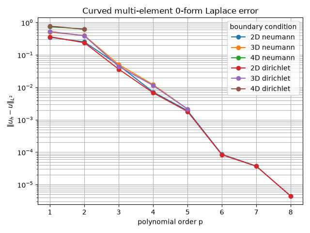

Note
Go to the end to download the full example code.
Hierarchical continuity for a direct multi-element Laplace solve.#
This example assembles the scalar primal Laplace operator on conforming quadrilateral, hexahedral, and four-dimensional hypercube meshes. Shared strata are processed from faces to edges to points. Only consecutive element pairs are compared for each shared object, so the continuity rows form a forest rather than a cycle.
Every element map is a matching curved restriction of one globally deformed coordinate map. The deformation vanishes on the outer boundary and agrees on all internal interfaces, so geometry is not used to identify topology.
The element-local stiffness matrices are assembled as a sparse block-diagonal operator. The continuity rows are sparse as well, and a sparse LU factorization solves the resulting Lagrange-multiplier saddle system without constructing a dense global matrix. A final convergence plot shows the physical \(L^2\) error for each mesh dimension as the polynomial order increases.
The same hierarchy supports scalar Dirichlet data. Boundary objects are visited from faces down to points, and the boundary trace is imposed on only the lowest-ID incident element of each object. Existing shared-object continuity rows then propagate that prescribed trace to the other incident elements, so a boundary node is never independently constrained multiple times.
The continuity assembly derives the test spaces internally. On a shared object, the default scalar trace test degree is the minimum element degree minus two in every tangential direction. Thus degree-one traces have no interior rows; their edge and face boundary values are connected when the lower-dimensional strata are processed. The reported zero-form residual is the maximum residual of these physical trace equations after the solve.
from __future__ import annotations
from itertools import product
from time import perf_counter
from typing import Literal
import numpy as np
import numpy.typing as npt
import scipy.sparse
from fdg import (
BasisSpecs,
BasisType,
CoordinateMap,
DegreesOfFreedom,
FunctionSpace,
IntegrationMethod,
IntegrationSpace,
IntegrationSpecs,
KFormSpecs,
Mesh,
MeshGeometry,
MeshKFormSpecs,
SpaceMap,
laplace_stiffness,
solve_hybridized,
)
from fdg.integration import projection_l2_dual
from matplotlib import pyplot as plt
PackedRows = tuple[
npt.NDArray[np.uintp],
npt.NDArray[np.uint64],
npt.NDArray[np.uint32],
npt.NDArray[np.uintp],
npt.NDArray[np.double],
]
DEFORMATION = 0.2
GEO_ORDER = 2
From element topology to a global scalar problem#
A finite-element field is initially represented independently on every element. The local scalar basis therefore has duplicate degrees of freedom on interfaces. The mesh knows which faces, edges, and points are shared, but it does not identify those objects by their physical coordinates. We use that topological information directly and let the mapped trace equations compare the physical fields on each shared object.
The mesh below is a tensor-product partition with two elements per axis. The
same construction works in any dimension supported by Mesh.
Tensor-product mesh#
Mesh.from_corners consumes the corner IDs of every element. The IDs are
chosen from one global 3 x 3 x ... point lattice, so neighboring elements
literally share point IDs. The mesh constructor derives all faces, edges,
and lower-dimensional boundary strata from those corners.
def grid_point(*index: int) -> int:
"""Return the point ID in a tensor grid with three points per axis."""
return sum(value * 3**axis for axis, value in enumerate(index))
def mesh_corners(ndim: int) -> npt.NDArray[np.uint64]:
"""Return corners of a two-by-two tensor-product mesh."""
corners: list[int] = []
for element_index in product(range(2), repeat=ndim):
for local_corner in range(2**ndim):
point_index = tuple(
element_index[axis] + ((local_corner >> axis) & 1) for axis in range(ndim)
)
corners.append(grid_point(*point_index))
return np.asarray(corners, dtype=np.uint64)
def make_mesh(ndim: int) -> Mesh:
"""Build the two-by-two (or two-by-two-by-two) mesh."""
return Mesh.from_corners(ndim, mesh_corners(ndim))
A matching curved geometry on every element#
Each element receives its own SpaceMap. The maps are restrictions of one
globally defined deformation, so their coordinates agree on every interface.
This is important: continuity is enforced from topology and trace pullbacks,
not by comparing floating-point coordinates or by merging geometric nodes.
def _deformed_coordinates(
*coordinates: npt.NDArray[np.double],
) -> tuple[npt.NDArray[np.double], ...]:
"""Deform global coordinates while preserving the outer boundary."""
bump = np.ones_like(coordinates[0])
for coordinate in coordinates:
bump *= 1.0 - coordinate**2
return tuple(coordinate + DEFORMATION * bump for coordinate in coordinates)
def make_element_maps(ndim: int, integration_order: int) -> list[SpaceMap]:
"""Build matching curved maps from reference cells to the physical grid."""
geometry_space = FunctionSpace(
*(BasisSpecs(BasisType.LAGRANGE_UNIFORM, GEO_ORDER) for _ in range(ndim))
)
geometry_nodes = np.linspace(-1.0, 1.0, GEO_ORDER + 1)
geometry_grid = np.meshgrid(*([geometry_nodes] * ndim), indexing="ij")
integration = IntegrationSpace(
*(
IntegrationSpecs(integration_order, IntegrationMethod.GAUSS)
for _ in range(ndim)
)
)
maps: list[SpaceMap] = []
for element_index in product(range(2), repeat=ndim):
reference_coordinates = tuple(
0.5 * geometry_grid[axis] + element_index[axis] - 0.5 for axis in range(ndim)
)
coordinates = _deformed_coordinates(*reference_coordinates)
maps.append(
SpaceMap(
*(
CoordinateMap(
DegreesOfFreedom(geometry_space, coordinate.ravel()), integration
)
for coordinate in coordinates
)
)
)
return maps
Continuity row assembly#
One call to Mesh.compute_kform_continuity_constraints walks the shared
objects from faces down to points, pairs consecutive incident elements, and
returns the cycle-free rows as five packed arrays: row offsets, element IDs,
element-frame components, local DoF indices, and coefficients. The trace
test spaces are derived internally: on each shared object the canonical test
component takes the lowest incident element order per axis, reduced by two
on axes without the component’s covector. The first side of every pair
carries a positive sign and the second side a negative sign, so each row
states that the paired traces agree.
def build_continuity_rows(
mesh: Mesh,
maps: list[SpaceMap],
element_specs: list[KFormSpecs],
) -> PackedRows:
"""Assemble hierarchical rows through the public C-backed mesh method."""
return mesh.compute_kform_continuity_constraints(element_specs, maps)
def packed_to_dense(packed: PackedRows, element_specs: list[KFormSpecs]) -> np.ndarray:
"""Materialize global packed rows as a dense matrix."""
row_offsets, element_ids, components, local_dofs, coefficients = packed
dofs_per_element = [int(np.sum(spec.component_dof_counts)) for spec in element_specs]
element_offsets = np.cumsum([0, *dofs_per_element[:-1]], dtype=np.intp)
matrix = np.zeros((row_offsets.size - 1, int(sum(dofs_per_element))))
for row in range(matrix.shape[0]):
for index in range(int(row_offsets[row]), int(row_offsets[row + 1])):
element = int(element_ids[index])
component = int(components[index])
column = (
int(element_offsets[element])
+ int(element_specs[element].get_component_slice(component).start)
+ int(local_dofs[index])
)
matrix[row, column] += coefficients[index]
return matrix
def packed_to_sparse(
packed: PackedRows, element_specs: list[KFormSpecs]
) -> scipy.sparse.csr_matrix:
"""Materialize packed global rows as a sparse CSR operator."""
row_offsets, element_ids, components, local_dofs, coefficients = packed
dofs_per_element = [int(np.sum(spec.component_dof_counts)) for spec in element_specs]
element_offsets = np.cumsum([0, *dofs_per_element[:-1]], dtype=np.uintp)
component_offsets = np.asarray(
[
[
int(spec.get_component_slice(component).start)
for component in range(spec.component_count)
]
for spec in element_specs
],
dtype=np.uintp,
)
row_indices = np.repeat(
np.arange(row_offsets.size - 1, dtype=np.intp),
np.diff(row_offsets).astype(np.intp, copy=False),
)
columns = (
element_offsets[element_ids]
+ component_offsets[element_ids, components]
+ local_dofs
)
return scipy.sparse.coo_matrix(
(coefficients, (row_indices, columns)),
shape=(row_offsets.size - 1, int(sum(dofs_per_element))),
).tocsr()
Manufactured solution and boundary data#
The same smooth field supplies both the compatible source and, when selected, the Dirichlet boundary datum. Its normal derivative vanishes on the outer boundary, so it remains a valid manufactured solution for the Neumann case. The Neumann nullspace is removed with one gauge equation; the Dirichlet case instead removes that nullspace through its hierarchical boundary rows.
def manufactured_solution(*coordinates: npt.NDArray[np.double]) -> npt.NDArray[np.double]:
"""Return a smooth mixed-parity solution with zero normal derivative."""
return (
1.0
+ 0.75 * len(coordinates)
+ np.sum(
[
0.5 * np.cos(np.pi * coordinate) + 0.25 * np.sin(0.5 * np.pi * coordinate)
for coordinate in coordinates
],
axis=0,
)
)
def manufactured_source(*coordinates: npt.NDArray[np.double]) -> npt.NDArray[np.double]:
"""Return the manufactured source ``-Delta(u)``."""
return np.sum(
[
0.5 * np.pi**2 * np.cos(np.pi * coordinate)
+ (np.pi**2 / 16.0) * np.sin(0.5 * np.pi * coordinate)
for coordinate in coordinates
],
axis=0,
)
Hybridized solve#
Each element operator is singular – the constants lie in its nullspace –
so it cannot be factorized on its own. solve_hybridized absorbs the
constraint rows into the element blocks, which borders each block back to
nonsingularity, and hands the system to the hybsol block solver. No
Schur complement is formed and no separate multiplier solve happens.
For Dirichlet data the boundary hierarchy supplies one owner trace per boundary object; the continuity rows transfer it to the other elements.
def gauge_row(
packed: PackedRows, element: int
) -> tuple[PackedRows, npt.NDArray[np.double]]:
"""Pin one degree of freedom, which gauges the constant nullspace."""
row_offsets, element_ids, components, local_dofs, coefficients = packed
rows = (
np.concatenate((row_offsets, np.asarray([element_ids.size + 1], dtype=np.uintp))),
np.concatenate((element_ids, np.asarray([element], dtype=np.uint64))),
np.concatenate((components, np.asarray([0], dtype=np.uint32))),
np.concatenate((local_dofs, np.asarray([0], dtype=np.uintp))),
np.concatenate((coefficients, np.asarray([1.0]))),
)
rhs = np.zeros(rows[0].size - 1)
rhs[-1] = 1.0
return rows, rhs
def solve_direct_laplace(
ndim: int,
order: int,
boundary_condition: Literal["neumann", "dirichlet"] = "neumann",
) -> tuple[np.ndarray, scipy.sparse.csr_matrix, float, int, int, float]:
"""Solve the direct primal problem with a selected scalar boundary condition."""
if boundary_condition not in ("neumann", "dirichlet"):
raise ValueError("boundary_condition must be 'neumann' or 'dirichlet'.")
mesh = make_mesh(ndim)
maps = make_element_maps(ndim, order + 4)
base_space = FunctionSpace(
*(BasisSpecs(BasisType.LAGRANGE_GAUSS_LOBATTO, order) for _ in range(ndim))
)
element_specs = [KFormSpecs(0, base_space) for _ in maps]
packed = build_continuity_rows(mesh, maps, element_specs)
continuity = packed_to_sparse(packed, element_specs)
n0 = int(np.sum(element_specs[0].component_dof_counts))
total_dofs = len(maps) * n0
rhs = np.zeros(total_dofs)
for element_id, element_map in enumerate(maps):
offset = element_id * n0
rhs[offset : offset + n0] = projection_l2_dual(
manufactured_source, base_space, element_map
).values.flatten()
if boundary_condition == "dirichlet":
boundary_conditions = {
int(object_id): manufactured_solution
for _, object_id, _, _ in mesh.iterate_boundary(ndim - 1)
}
constraints, constraint_rhs = mesh.compute_kform_global_constraints(
element_specs, maps, boundary_conditions
)
else:
constraints, constraint_rhs = gauge_row(packed, 0)
geometry = MeshGeometry.from_elements(*maps)
structure = MeshKFormSpecs.from_space(ndim, [("u", 0)], base_space, len(maps))
result = solve_hybridized(
geometry,
structure,
rhs,
constraints,
constraint_rhs,
laplace_stiffness,
)
solution = np.concatenate(result.element_dofs)
constraint_residual = result.constraint_residual
if constraint_residual > 1.0e-10:
raise RuntimeError(
f"0-form boundary/continuity residual is too large: {constraint_residual:.3e}"
)
error_squared = 0.0
for element_id, element_map in enumerate(maps):
values = solution[element_id * n0 : (element_id + 1) * n0]
dofs = DegreesOfFreedom(base_space, values)
reference_values = dofs.reconstruct_at_integration_points(
element_map.integration_space
)
coordinates = [element_map.coordinate_map(axis).values for axis in range(ndim)]
exact = manufactured_solution(*coordinates)
error_squared += np.sum(
(reference_values - exact) ** 2
* np.abs(element_map.determinant)
* element_map.integration_space.weights()
)
# The block solve certified the system nonsingular, so its size is its rank.
rank = total_dofs + constraints[0].size - 1
return (
solution,
continuity,
float(np.sqrt(error_squared)),
rank,
constraints[0].size - 1,
constraint_residual,
)
Convergence study and error plot#
Run both boundary-condition variants at increasing polynomial orders. For
Dirichlet data are passed to Mesh.compute_kform_global_constraints, which
imposes the hierarchical trace on the lowest-ID incident element of each
boundary object. Retained continuity rows propagate that trace to every
other incident element.
The printed residual checks both continuity and boundary equations, while the physical \(L^2\) error measures approximation quality. The plot uses a logarithmic error axis so the p-refinement trend is visible.
def main() -> None:
"""Report p-refinement for both scalar boundary-condition variants."""
order_sweeps = {
2: (1, 2, 3, 4, 5, 6, 7, 8),
3: (1, 2, 3, 4, 5),
# Keep the 4D sweep short to bound gallery runtime.
4: (1, 2),
}
boundary_conditions: tuple[Literal["neumann", "dirichlet"], ...] = (
"neumann",
"dirichlet",
)
convergence: dict[tuple[str, int], tuple[tuple[int, ...], list[float]]] = {}
for boundary_condition in boundary_conditions:
for ndim, orders in order_sweeps.items():
print(
f"{ndim}D curved mesh ({boundary_condition}, "
f"deformation={DEFORMATION:g}):",
flush=True,
)
errors: list[float] = []
for order in orders:
started = perf_counter()
solution, continuity, error, rank, constraint_count, residual = (
solve_direct_laplace(ndim, order, boundary_condition)
)
elapsed = perf_counter() - started
del solution
errors.append(error)
system_size = continuity.shape[1] + constraint_count
print(
f" p={order}: trace/continuity residual={residual:.3e}, "
f"rows={continuity.shape[0]}, nnz={continuity.nnz}, "
f"rank={rank}/{system_size}, L2={error:.6e}, solve={elapsed:.2f}s",
flush=True,
)
convergence[(boundary_condition, ndim)] = (orders, errors)
ratios = [previous / current for previous, current in zip(errors, errors[1:])]
print(
" L2 errors: " + ", ".join(f"{error:.6e}" for error in errors),
flush=True,
)
if ratios:
print(
" successive improvement: "
+ ", ".join(f"{ratio:.3f}x" for ratio in ratios),
flush=True,
)
fig, axis = plt.subplots()
for (boundary_condition, ndim), (orders, errors) in convergence.items():
axis.semilogy(
orders,
errors,
marker="o",
label=f"{ndim}D {boundary_condition}",
)
axis.set(
xlabel="polynomial order p",
ylabel=r"$\|u_h - u\|_{L^2}$",
title="Curved multi-element 0-form Laplace error",
)
axis.grid(True, which="both")
axis.legend(title="boundary condition")
fig.tight_layout()
if "agg" not in plt.get_backend().lower():
plt.show()
if __name__ == "__main__":
main()

2D curved mesh (neumann, deformation=0.2):
p=1: trace/continuity residual=8.882e-16, rows=7, nnz=56, rank=24/24, L2=3.489275e-01, solve=0.00s
p=2: trace/continuity residual=1.332e-15, rows=11, nnz=198, rank=48/48, L2=2.529980e-01, solve=0.00s
p=3: trace/continuity residual=1.166e-15, rows=15, nnz=480, rank=80/80, L2=4.797408e-02, solve=0.00s
p=4: trace/continuity residual=2.220e-15, rows=19, nnz=950, rank=120/120, L2=7.170093e-03, solve=0.00s
p=5: trace/continuity residual=1.638e-15, rows=23, nnz=1656, rank=168/168, L2=1.920299e-03, solve=0.01s
p=6: trace/continuity residual=1.776e-15, rows=27, nnz=2646, rank=224/224, L2=8.569349e-05, solve=0.01s
p=7: trace/continuity residual=1.964e-15, rows=31, nnz=3968, rank=288/288, L2=3.719388e-05, solve=0.01s
p=8: trace/continuity residual=1.776e-15, rows=35, nnz=5670, rank=360/360, L2=4.409041e-06, solve=0.03s
L2 errors: 3.489275e-01, 2.529980e-01, 4.797408e-02, 7.170093e-03, 1.920299e-03, 8.569349e-05, 3.719388e-05, 4.409041e-06
successive improvement: 1.379x, 5.274x, 6.691x, 3.734x, 22.409x, 2.304x, 8.436x
3D curved mesh (neumann, deformation=0.2):
p=1: trace/continuity residual=1.776e-15, rows=37, nnz=592, rank=102/102, L2=5.037372e-01, solve=0.02s
p=2: trace/continuity residual=2.665e-15, rows=91, nnz=4914, rank=308/308, L2=3.977487e-01, solve=0.04s
p=3: trace/continuity residual=5.329e-15, rows=169, nnz=21632, rank=682/682, L2=5.031862e-02, solve=0.16s
p=4: trace/continuity residual=7.105e-15, rows=271, nnz=67750, rank=1272/1272, L2=1.211797e-02, solve=0.34s
p=5: trace/continuity residual=1.288e-14, rows=397, nnz=171504, rank=2126/2126, L2=2.150161e-03, solve=1.03s
L2 errors: 5.037372e-01, 3.977487e-01, 5.031862e-02, 1.211797e-02, 2.150161e-03
successive improvement: 1.266x, 7.905x, 4.152x, 5.636x
4D curved mesh (neumann, deformation=0.2):
p=1: trace/continuity residual=3.553e-15, rows=175, nnz=5600, rank=432/432, L2=7.444102e-01, solve=0.67s
p=2: trace/continuity residual=9.770e-15, rows=671, nnz=108702, rank=1968/1968, L2=6.291073e-01, solve=1.95s
L2 errors: 7.444102e-01, 6.291073e-01
successive improvement: 1.183x
2D curved mesh (dirichlet, deformation=0.2):
p=1: trace/continuity residual=4.441e-16, rows=7, nnz=56, rank=31/31, L2=3.636579e-01, solve=0.00s
p=2: trace/continuity residual=9.992e-16, rows=11, nnz=198, rank=63/63, L2=2.382914e-01, solve=0.00s
p=3: trace/continuity residual=2.665e-15, rows=15, nnz=480, rank=103/103, L2=3.634391e-02, solve=0.01s
p=4: trace/continuity residual=1.610e-15, rows=19, nnz=950, rank=151/151, L2=6.790316e-03, solve=0.01s
p=5: trace/continuity residual=3.109e-15, rows=23, nnz=1656, rank=207/207, L2=1.799928e-03, solve=0.01s
p=6: trace/continuity residual=3.553e-15, rows=27, nnz=2646, rank=271/271, L2=8.304227e-05, solve=0.02s
p=7: trace/continuity residual=1.818e-15, rows=31, nnz=3968, rank=343/343, L2=3.674453e-05, solve=0.02s
p=8: trace/continuity residual=2.665e-15, rows=35, nnz=5670, rank=423/423, L2=4.407011e-06, solve=0.04s
L2 errors: 3.636579e-01, 2.382914e-01, 3.634391e-02, 6.790316e-03, 1.799928e-03, 8.304227e-05, 3.674453e-05, 4.407011e-06
successive improvement: 1.526x, 6.557x, 5.352x, 3.773x, 21.675x, 2.260x, 8.338x
3D curved mesh (dirichlet, deformation=0.2):
p=1: trace/continuity residual=2.665e-15, rows=37, nnz=592, rank=127/127, L2=5.294507e-01, solve=0.07s
p=2: trace/continuity residual=4.330e-15, rows=91, nnz=4914, rank=405/405, L2=3.907189e-01, solve=0.05s
p=3: trace/continuity residual=7.550e-15, rows=169, nnz=21632, rank=899/899, L2=4.418968e-02, solve=0.21s
p=4: trace/continuity residual=1.688e-14, rows=271, nnz=67750, rank=1657/1657, L2=1.144162e-02, solve=0.61s
p=5: trace/continuity residual=1.688e-14, rows=397, nnz=171504, rank=2727/2727, L2=2.136590e-03, solve=1.96s
L2 errors: 5.294507e-01, 3.907189e-01, 4.418968e-02, 1.144162e-02, 2.136590e-03
successive improvement: 1.355x, 8.842x, 3.862x, 5.355x
4D curved mesh (dirichlet, deformation=0.2):
p=1: trace/continuity residual=4.441e-15, rows=175, nnz=5600, rank=511/511, L2=7.739767e-01, solve=0.77s
p=2: trace/continuity residual=9.326e-15, rows=671, nnz=108702, rank=2511/2511, L2=6.211380e-01, solve=2.56s
L2 errors: 7.739767e-01, 6.211380e-01
successive improvement: 1.246x
Total running time of the script: (0 minutes 10.781 seconds)